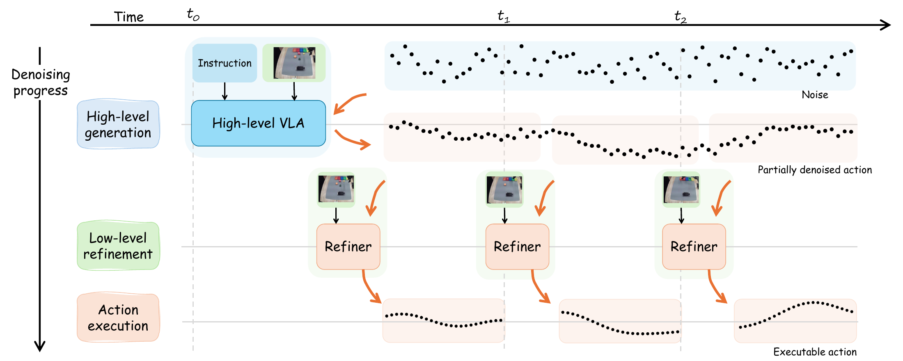
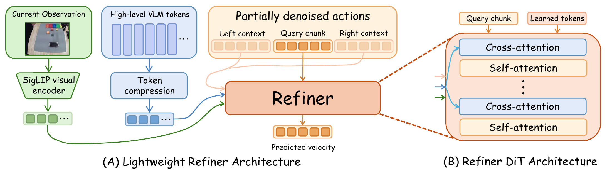
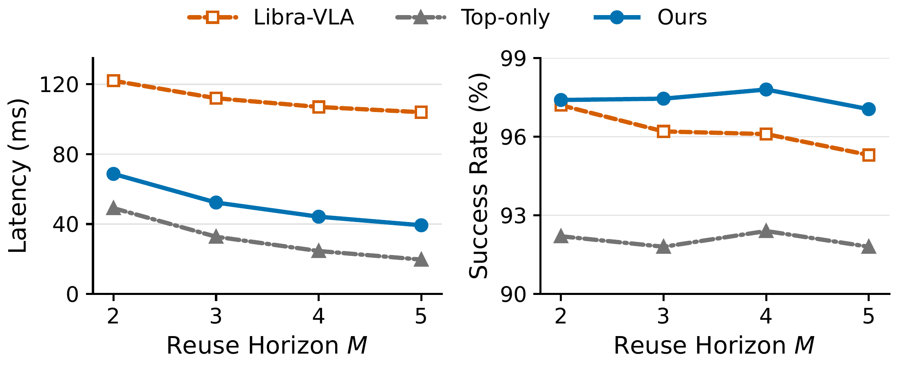
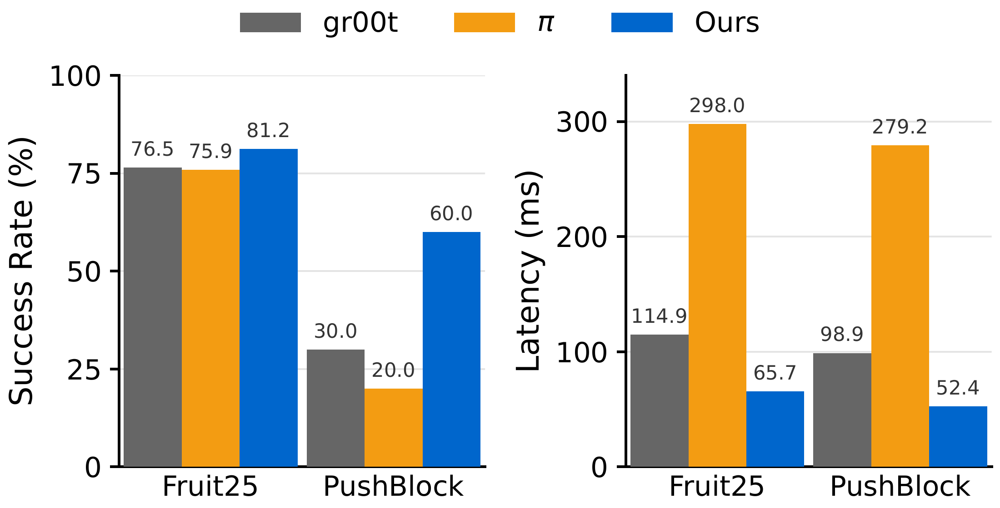

Early denoising at the high level
A VLA (Qwen3-VL with a flow-matching head) denoises a long horizon (H = 32) only up to an intermediate progress α, keeping the task intent encoded by instruction and image.
Partially denoise a long-horizon plan, reuse it, and finish each action chunk from the latest observation.
1Michigan State University 2Ant Technology U.S., Inc.
Vision-language-action (VLA) models increasingly rely on diffusion- or flow-matching-based action heads to generate continuous robot actions. These action heads typically process the denoising trajectory in a largely uniform manner. However, we observe that the conditioning focus naturally shifts across denoising stages: early stages combine language instructions and visual observations to establish a coarse action trajectory, whereas later stages place greater emphasis on current visual observations for action alignment. Based on this insight, we introduce StairVLA, a stage-aware hierarchical action generation framework that uses partially denoised actions as a natural interface between coarse long-horizon action generation and local refinement. A high-level VLA performs early denoising to produce a reusable long-horizon partially denoised action trajectory, while a lightweight refiner operates at a higher frequency to refine local action chunks using the latest observations. This design amortizes expensive high-level VLA computation while preserving frequent closed-loop correction. On LIBERO, our GR00T-style instantiation improves average success from 96.5% to 97.8% while reducing amortized inference latency from 115.0 ms to 44.2 ms per action chunk. More broadly, across two VLA backbones, simulation benchmarks, and real-robot tasks, StairVLA consistently reduces inference cost while maintaining strong task performance.
The conditioning focus of a generative action head changes as denoising proceeds: instruction and image jointly shape the coarse trajectory early on, and the current image matters more near the end. Task competence is largely in place before denoising completes.

StairVLA uses the partially denoised trajectory as the interface between two levels.

A VLA (Qwen3-VL with a flow-matching head) denoises a long horizon (H = 32) only up to an intermediate progress α, keeping the task intent encoded by instruction and image.
The partially denoised trajectory is cached and reused for M refinement cycles, so the expensive VLA call is amortized over many executed actions.
A lightweight DiT refiner completes the remaining denoising for each chunk, conditioned on a SigLIP encoding of the latest image, compressed VLA features, and neighboring trajectory context.

Success rate (%) over 500 trials per suite with one model trained on all four suites. Latency is per executable action chunk on one NVIDIA A100, including the amortized high-level cost.
| Method | Spatial | Object | Goal | Long | Avg. | Latency (ms) |
|---|---|---|---|---|---|---|
| StarVLA-GR00T† | 97.8 | 98.8 | 97.4 | 92.0 | 96.5 | 115.0 |
| StairVLA (GR00T-base) | 98.0 | 99.6 | 97.8 | 95.8 | 97.8 | 44.2 |
| StarVLA-π† | 99.2 | 99.0 | 97.2 | 95.8 | 97.8 | 183.3 |
| StairVLA (π-base) | 99.6 | 99.0 | 96.8 | 97.4 | 98.3 | 44.5 |
† Success rates reported by StarVLA. Comparisons with other hierarchical and coarse-to-fine VLAs are in the paper.
| Setting | Avg. | Δ |
|---|---|---|
| StarVLA-GR00T | 96.5 | – |
| High-level policy only (H = 32) | 92.4 | −4.1 |
| StairVLA w/o action context | 97.2 | +0.7 |
| StairVLA | 97.8 | +1.3 |
Running the long-horizon policy alone loses accuracy; the observation-conditioned refiner recovers it, and the temporal action context adds a further gain.

Robustness to seven perturbation types, zero-shot from LIBERO and after fine-tuning on LIBERO-Plus.
| Setting | Camera | Robot | Language | Light | Background | Noise | Layout | Avg. |
|---|---|---|---|---|---|---|---|---|
| Zero-shot | 43.7 | 54.5 | 82.5 | 93.4 | 90.5 | 67.8 | 74.0 | 70.4 |
| Fine-tuned | 95.5 | 48.4 | 83.7 | 96.8 | 94.9 | 95.4 | 77.4 | 83.7 |
An AgileX PiperX arm with a fixed top camera and a wrist camera. Fruit25 has 24 pick-and-place tasks plus a multi-object sorting task (8 Hz); PushBlock is a contact-rich pushing task (20 Hz). All methods use Qwen3-VL-2B and run on the same RTX A4000.

Top camera, 4× speed. Red border model inference, green border action execution; the counter shows executed action chunks.
@misc{yuan2026stairvla,
title = {StairVLA: Stage-Aware Hierarchical Action Generation for Vision-Language-Action Models},
author = {Yuan, Shangyuan and Qi, Xinda and Pu, Yujiang and Guo, Wenliang and Tan, Xiaobo},
year = {2026},
eprint = {2610.07756},
archivePrefix = {arXiv},
primaryClass = {cs.RO},
url = {https://arxiv.org/abs/2610.07756}
}StairVLA is built on StarVLA.